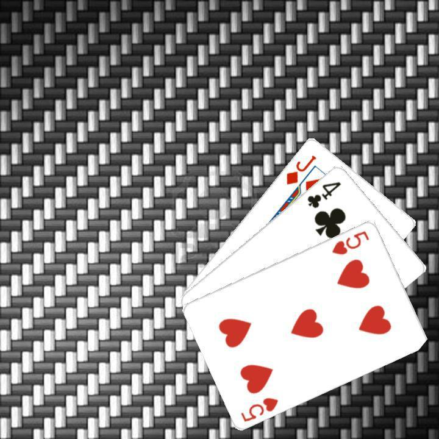

Support
A data collection tool for building playing card detection datasets. Capture images with your iPhone camera, annotate bounding boxes on-device, and export in Create ML format.
Getting Started
Tap "Scan Cards" from the main menu. This opens the camera view. The app begins detecting playing cards in real time as soon as the camera is active.
Arrange your cards and point the camera. Lay cards on a flat, contrasting surface. Position your iPhone so the cards fill the frame. The detection count appears in the top-right corner of the camera view.
Let the app stabilize, or capture manually. A "Stable" indicator appears when consistent detections have been confirmed across several frames. The app captures automatically at that point. Tap the Capture button to capture manually at any time.
Review the captured image. The image is displayed with bounding box overlays. Green boxes are model predictions; orange boxes are ones you have corrected. Tap a box to select it.
Correct any errors. With a box selected, tap "Edit: [label]" to open the label picker and choose the correct rank and suit. Drag the box body to reposition it. Drag a corner handle to resize. Tap "Delete" to remove a false detection. Tap "Add Missing Card" to add a box the model missed.
Save or rescan. Tap Save to store the image and annotations. Tap Rescan to discard the current capture and return to the camera without saving.
Build your dataset. Repeat the scan-and-save cycle. Tap "Review Data" from the main menu at any time to browse saved images, edit annotations, or delete scans.
Export when ready. Tap "Export Data" from the main menu. CardVision generates a zip archive and presents the iOS share sheet. Send it via AirDrop, save to Files, or email it — then load it into your Create ML project.
Tips for Best Results
Use even, diffuse lighting. Glare on card faces is the most common cause of detection failures. Indoor lighting works well; direct sunlight causes reflections that the model struggles with.
Use varied, busy backgrounds intentionally. Textured surfaces — stone, wood grain, fabric, carpet — train the model to ignore background noise, which makes it more robust in real-world conditions. A plain clean surface produces a brittle model that fails the moment anything cluttered is in frame.
Normal hand movement is fine. The app scans each frame continuously but calibrates bounding box coordinates against the last captured frame, so ordinary hand jitter won't corrupt your annotations. You don't need to hold unnaturally still.
Vary your layouts intentionally. For a useful training set, capture cards at different angles, spacings, lighting conditions, and partial overlaps. Variety improves model generalization.
Use the zoom gesture during review to check tight bounding boxes. Pinch to zoom in, then drag corner handles at high zoom for precise edge alignment on small or overlapping cards.
Vary your card arrangements as well as your backgrounds — spread, overlapping, diagonal, tight. A dataset captured entirely in one layout will overfit to that layout.
Example of a good training background — this is the kind of surface that helps, not hurts:

Carbon fiber weave — a high-contrast, highly repetitive pattern that would trip up a model trained only on clean surfaces.
After exporting, run verify_annotations.py on the export folder before merging. It renders each annotation as an overlay on the source image, making it easy to spot badly-placed boxes before they enter your training set.
Frequently Asked Questions
What format does the export use?
The zip archive contains an images/ folder with JPEG files and an annotations.json in Create ML object detection format. Coordinates are center-based pixel values (x, y, width, height) compatible with Create ML's annotation schema. A metadata.json is also included with confidence scores, original model predictions, and correction flags for each annotation.
How do I merge multiple exports into one training set?
Download merge_exports.py and run python3 merge_exports.py from the directory containing your exports. The script prompts for source and target paths, handles sequential renaming of image files, backs up the existing annotations.json before modifying it, and prints a label distribution summary when done. Requires Python 3 — no additional packages needed.
How do I visually verify my export before using it?
Download verify_annotations.py and run python3 verify_annotations.py <export_folder>. The script draws each bounding box with its label on the source image and writes the results to a verify_output/ folder. Useful for catching badly-placed boxes before they get into your training set.
Can I go back and edit a scan I already saved?
Yes. Tap "Review Data" from the main menu, tap any thumbnail to open the detail view, then tap "Edit Annotations" to enter edit mode. All the same gesture controls apply — move, resize, add, delete, and correct labels. Tap Save to persist your changes.
What iOS version is required?
CardVision requires iOS 17.0 or later on iPhone. It is not available on iPad.
Is any data transmitted off my device?
No. All camera processing, detection, image storage, and annotation happens entirely on your device. No images or annotation data are ever sent to any server. Exporting produces a local file that you share manually through the iOS share sheet.
How do I delete all stored data?
Open About from the main menu, tap Privacy Settings, then tap "Delete All Stored Data." This removes all saved images and annotation records from the app's local storage.
What label codes does the app use?
Each card is a two-character code: rank + suit. Ranks are A, 2–9, T (10), J, Q, K. Suits are S (Spades), H (Hearts), D (Diamonds), C (Clubs). Examples: AS = Ace of Spades, TH = 10 of Hearts, KD = King of Diamonds.
Troubleshooting
Detection count stays at zero
Check that the camera has a clear view of the card faces and that lighting is adequate. Make sure the lens is clean. Try moving closer or adjusting the angle to reduce glare.
Stable indicator never appears
Hold the phone still and give the aggregator time to confirm consistent detections — typically 1–2 seconds of stable framing. If the indicator still doesn't appear, tap Capture manually to proceed.
Card labelled incorrectly
Tap the bounding box to select it, then tap "Edit: [label]" to open the label picker. Select the correct rank and suit and tap Confirm. Corrected labels are stored separately from the original model prediction.
A card was missed by the model
Tap "Add Missing Card." A new bounding box is placed at the center of the image at the average annotation size. Drag it over the missed card, resize as needed, then assign the correct label.
Export produces an empty archive
Make sure you have at least one saved scan. The export count on the Export screen shows how many records and annotations will be included. If the count is zero, return to the scan flow and save some images first.
App crashes or freezes
Force-close the app and reopen it. Saved data is stored in SwiftData and persists across restarts. If the issue recurs, please contact support with your device model and iOS version.
Contact
support@lesliestreetstudio.com
Please include your device model, iOS version, and a description of the issue.